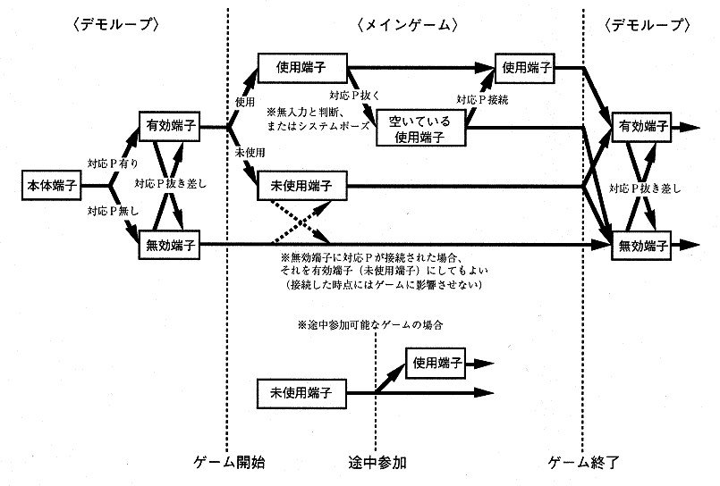

アプリケーションで使用できる入力ペリフェラル（対応Ｐ）について「ソフトウェア作成基準」の〈パッド設定原則〉に準じた以下の原則を守らなければならない。
＜対応入力ペリフェラル設定原則＞ ・本体端子１に対応Pが接続されていない場合、ゲームをスタートさせてはならない。 ・原則として本体端子１は１Pの操作に、本体端子２は２Pの操作に、それぞれ対応する。 |
原則として、電源がＯＮになっている間は出来る限り頻繁にチェックを行い、最低限、暴走などしないように対処する。
どのタイミングでどのようなチェックを行うかは、以下の推奨仕様を参照のこと。
《推奨仕様》
| (a)スタート前のチェック |
◆対応Ｐのチェック（有効端子の登録）
※特にマウス未対応のアプリケーションでは、マウスが接続されている場合に不安定な動作を起こさないように注意する。
※プレイヤー毎にスタートタイミングの異なる（途中参加可能な）マルチプレイヤーゲームでは、メインゲーム内を含むあらゆるタイミングで頻繁にチェックを行うこと。
| (b)スタート時のチェック |
◆アプリケーションのスタート
※途中参加の可能な多人数ゲームでは、１Ｐ以外からスタートさせてもよい場合もあり得る。
※多人数ゲームで、各プレイヤーが個別に設定する内容に関しては、各プレイヤーに行わせてもよい。
◆使用端子の決定
※最大プレイ人数以上の使用端子は選ばれない。
| (c)メインゲーム内のチェック |
◆抜き差しのチェック
(i) 抜かれた場合
＜「システムポーズ」について＞
※次のような場合には、「システムポーズ」が望ましい。※「システムポーズ」は、抜かれた使用Ｐが差し戻された時点（再び使用できる状態になったとアプリケーションが判断した時点）で、どの使用Ｐからも解除できるものとする。
※ユーザポーズ中に「システムポーズ」に移行するような場合、「システムポーズ」が解除されればユーザポーズも自動的に解除となるようにする。（ユーザポーズ中に使用ペリフェラルが抜かれた場合など）
(ii) 差された場合
※抜かれた使用Ｐ以外が差し戻された場合でも、それが対応Ｐならば入力を再開する。
(iii)追加された場合
※使用端子の再決定は以下のタイミングで行う。
※最大プレイ人数以上の使用端子は選ばれない。
ここまでのチェックによる、端子状態の遷移を下図に示す。

各入力ペリフェラルにアプリケーションを対応させる場合は、特殊な場合を除き必ずCONTROL PADでも操作できなければならない。従って最低でもオプションのコントロール設定（CONTROL）は両方の入力ペリフェラル（CONTROL PADと各対応入力ペリフェラル）に対応する必要がある。 オプションを各入力ペリフェラルに対応させる場合は以下の規則を守ること。
各入力ペリフェラルの名称をゲーム内で表示する必要がある場合は、原則的に本作成基準内で使用している名称に統一すること。
マルチターミナル レーシングコントローラー シャトルマウス（マウス） 等
（１．基本項目、了）